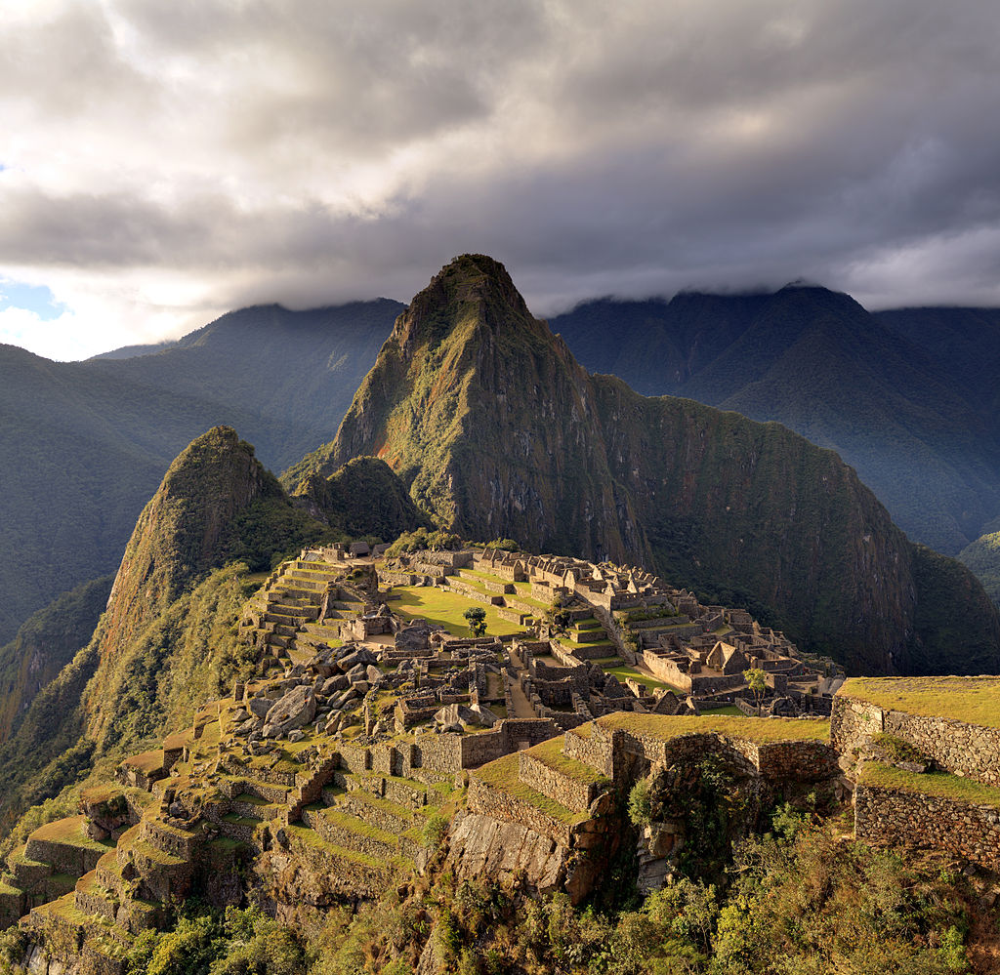
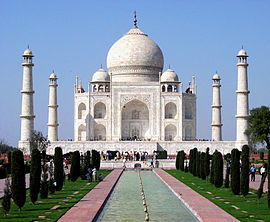
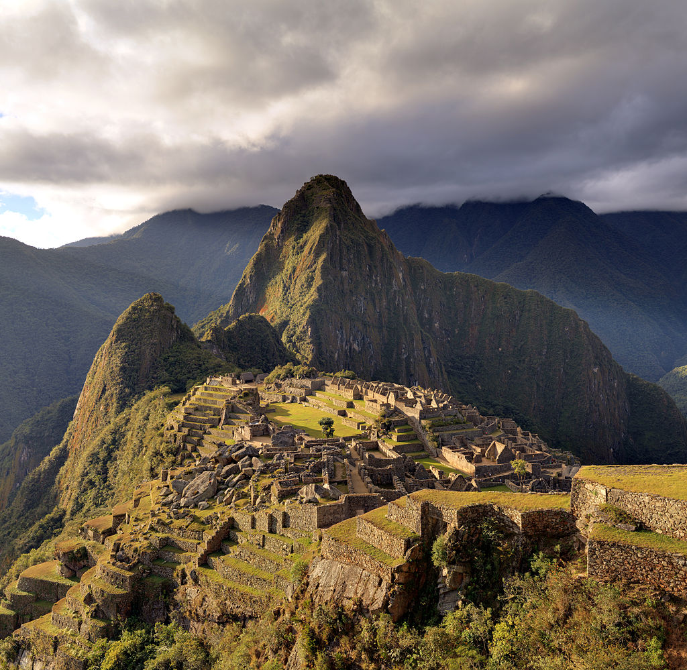
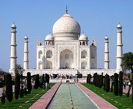

The Seven Wonders of the world is a list of man-made structures built during the classical era. Scholars believe that ancient historians began compiling the list in the second century B.C. The final list of the Seven Wonders that we currently reference was defined in the Middle Ages.It is the first known list of the most remarkable creations of classical antiquity; it was based on guidebooks popular among Hellenic sightseers and only includes works located around the Mediterranean rim. The number seven was chosen because the Greeks believed it represented perfection and plenty, and because it was the number of the five planets known anciently, plus the sun and moon.

 


